3 друга на тарелке
Векторный заголовок и три направления логотипа. Все буквы переведены в контуры. Прозрачный фон; встроенных растровых изображений и внешних шрифтов нет.
Заголовок первого экрана
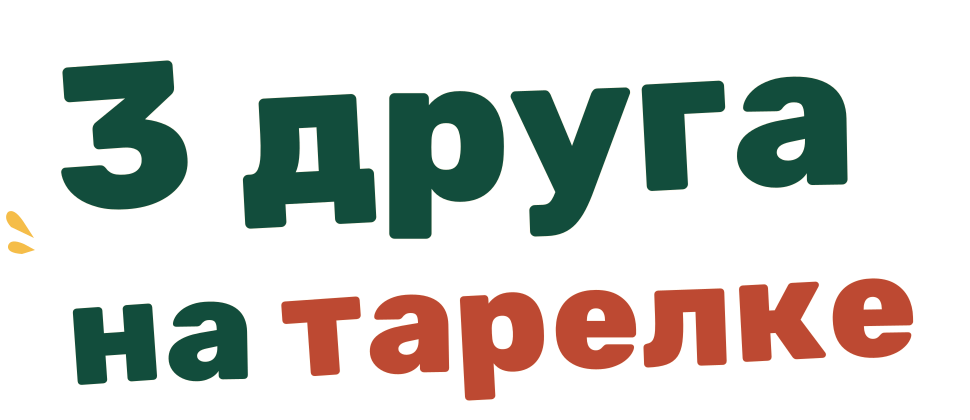
01 · Тарелка
Ближе всего к первому экрану: бумажная тарелка, зелень, крупа и яйцо. Подходит для шапки сайта.
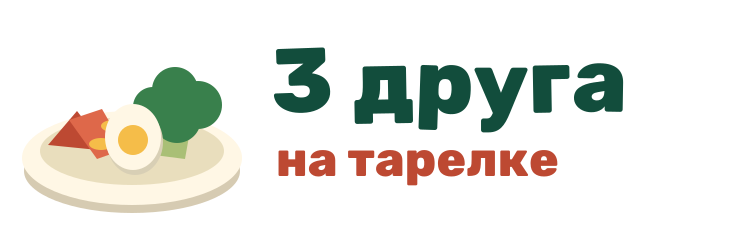
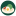
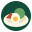
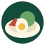
02 · Три друга
Яблоко, хлеб и яйцо — три героя, по одному от каждой группы еды. Самый сюжетный вариант.
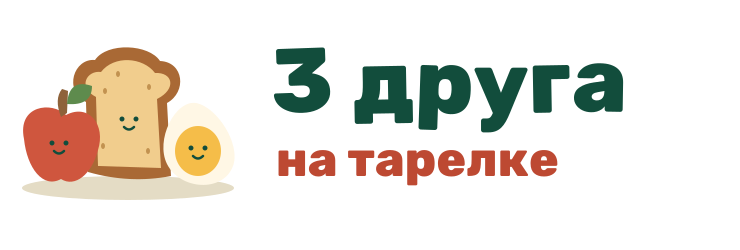
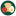
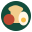
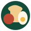
03 · Цифра 3
Компактная эмблема: тройка на зелёной тарелке, росток и три цветных акцента. Самый читаемый вариант для маленьких размеров.
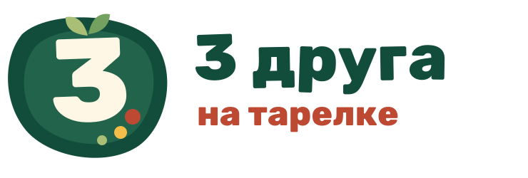
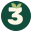
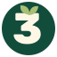